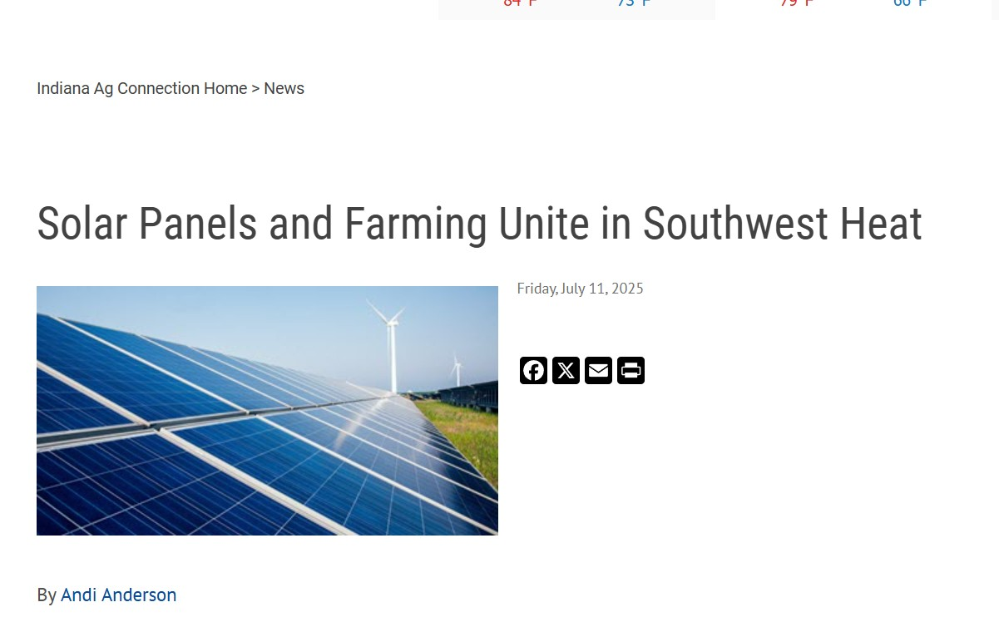
Solar Panels and Farming Unite in Southwest Heat
Highlights agrivoltaics' success in hot, arid regions, emphasizing water conservation, improved crop yields, enhanced panel performance, and farmworker protection.
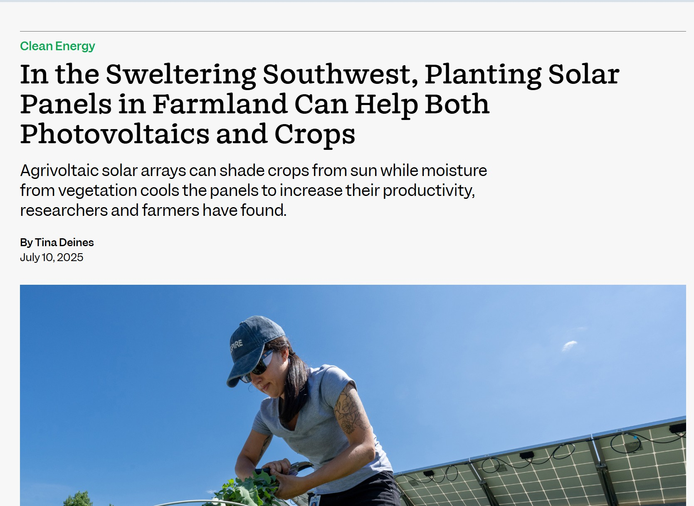
In the Sweltering Southwest, Planting Solar Panels in Farmland Can Help Both Photovoltaics and Crops
Comprehensive report on agrivoltaics benefits (irrigation, cooling, safety) and challenges (costs, attitudes), featuring Barron-Gafford's research.
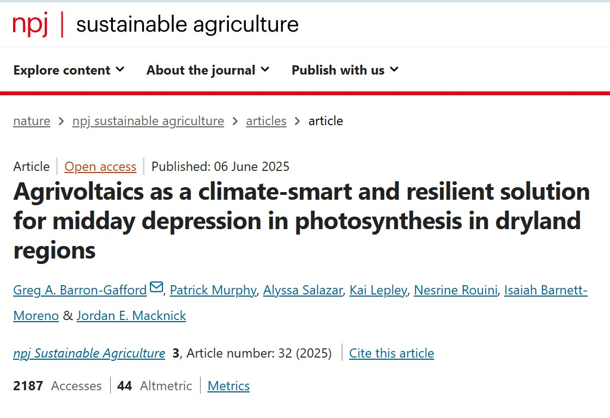
Agrivoltaics as a climate-smart and resilient solution for midday depression in photosynthesis in dryland regions
SALSAv pilot demonstrated that partial shade eliminated midday photosynthesis slumps, giving equal or higher daily carbon uptake and yields across peppers, kale & beans.
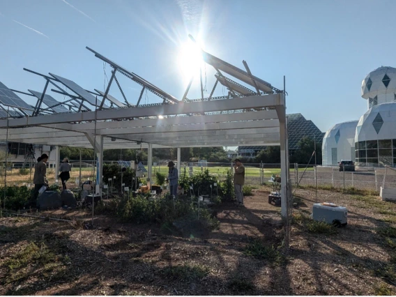
Exploring Crop Nutrients in Agrivoltaic Systems
SALSAv study shows PV-shade alters soil moisture & nutrient dynamics, with implications for produce quality.
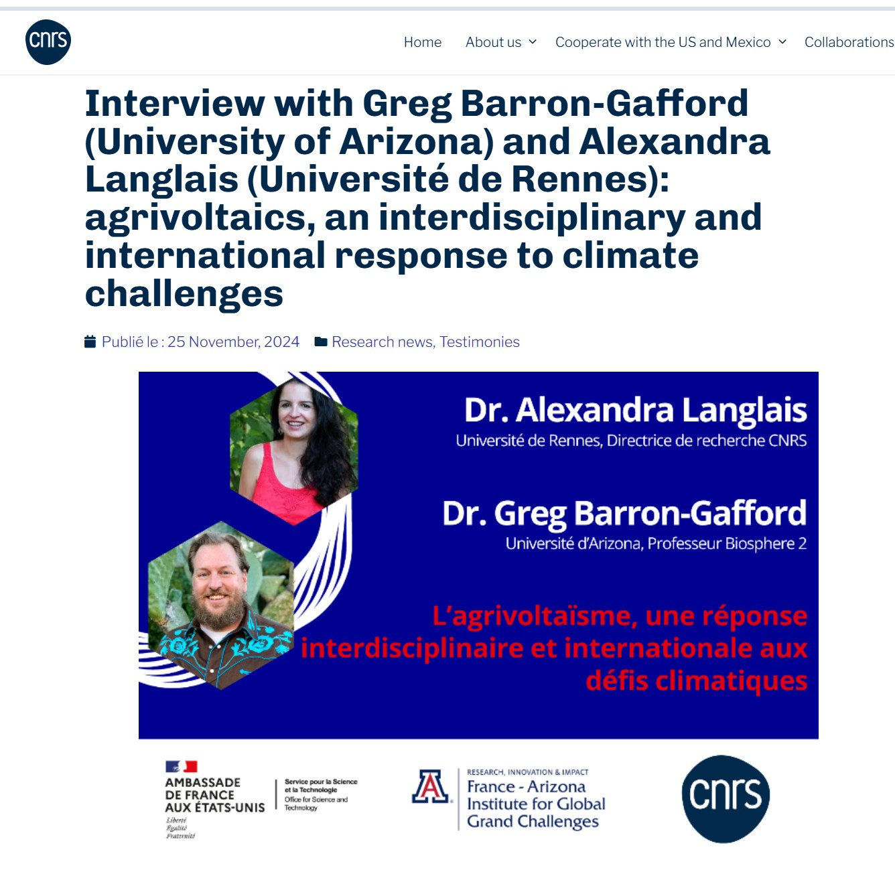
Interview with Greg Barron-Gafford (University of Arizona) and Alexandra Langlais (Université de Rennes)
Discusses interdisciplinary collaboration (science and law) to reduce land-use conflict and protect farmers in arid regions.
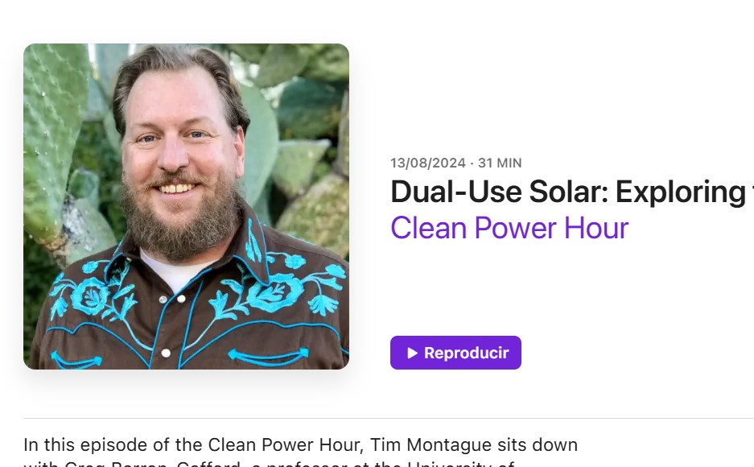
Dual-Use Solar: Exploring the Synergy of Crops and Clean Energy
Barron-Gafford discusses the 3% panel efficiency increase from cooling, water conservation, crop yields, and the international research network.
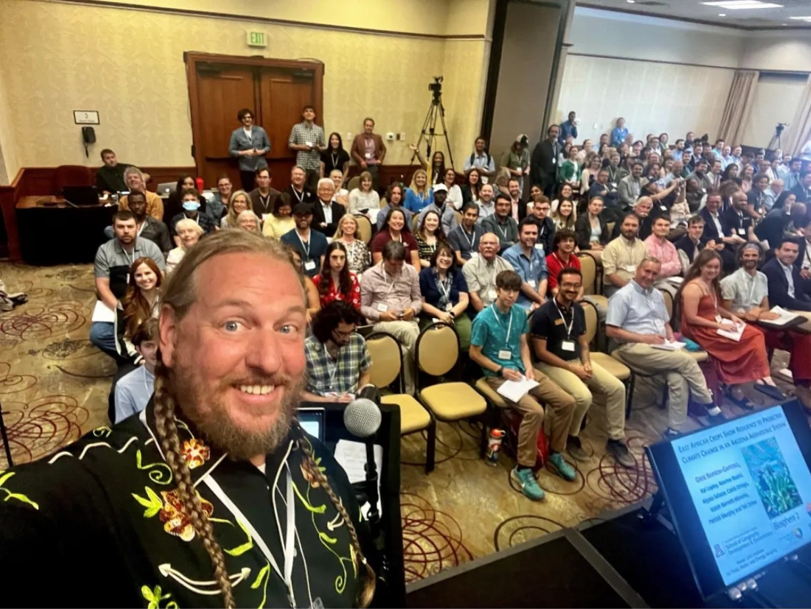
Growing Knowledge: U of A Researchers Share Findings at 2024 Agrivoltaics World Conference
Conference recap—team reports physiological data showing crop heat-stress relief under PV arrays.

Advancing Agrivoltaics through a Systematic Design Framework
Develops a first-of-its-kind open-source agrivoltaic design model with solar, crop, economic, and optimization modules to inform design guidelines.

Sonoran Desert Photovoltaics Laboratory and Growing Green: A Networked Regional Approach to Agrivoltaics Citizen Science
Describes a multi-generational collaboration for small-scale agrivoltaics sites, involving K-12 students and teachers in citizen science.

Plants, Power, and People: Using Agrivoltaics Engineering to Create a Network of K-12 Teachers and Students
Details an NSF-funded Research Experience for Teachers (RET) program that engages K-12 STEM teachers and students in authentic agrivoltaics research.
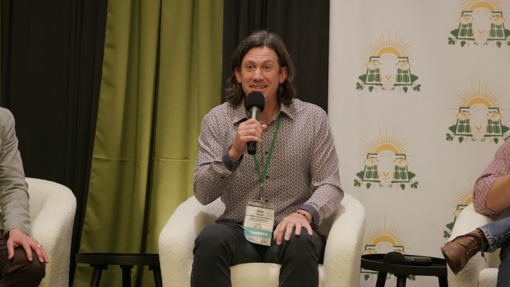
State of U.S. Agrivoltaics Deployment & Farmer’s Forum
NREL status update + farmer panel on scale-up hurdles, economics and labour safety in large PV farms.

Agrivoltaic system design tools for managing trade-offs between energy production, crop productivity and water consumption
Develops an open-source model, predicting 30-40% water reduction and Land Equivalent Ratio > 2, providing decision support tools.
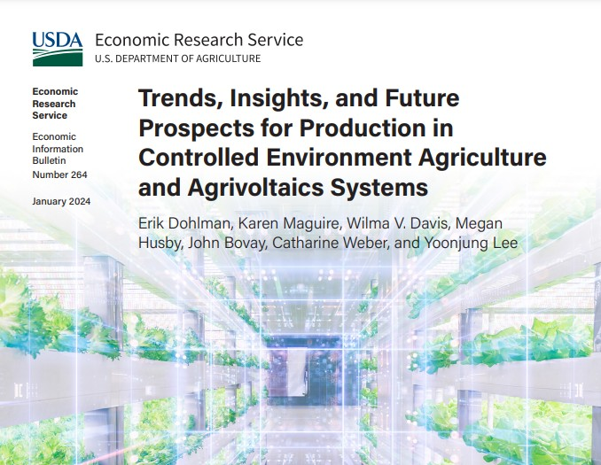
Trends, Insights, and Future Prospects for CEA & Agrivoltaics Systems (EIB-264)
National outlook on investment, adoption rates and policy levers for controlled-environment ag and agrivoltaics.
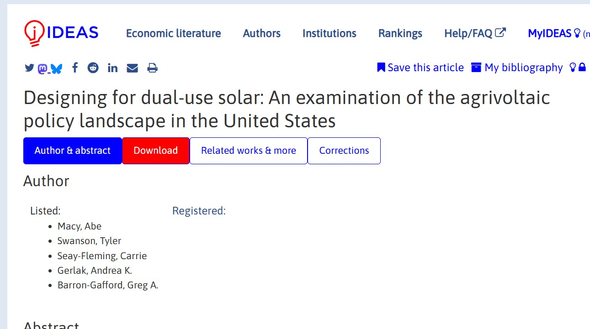
Designing for Dual-Use Solar: An Examination of the Agrivoltaic Policy Landscape in the United States
A policy review of existing U.S. federal and state agrivoltaics policies, categorizing approaches and discussing proposed federal legislation.
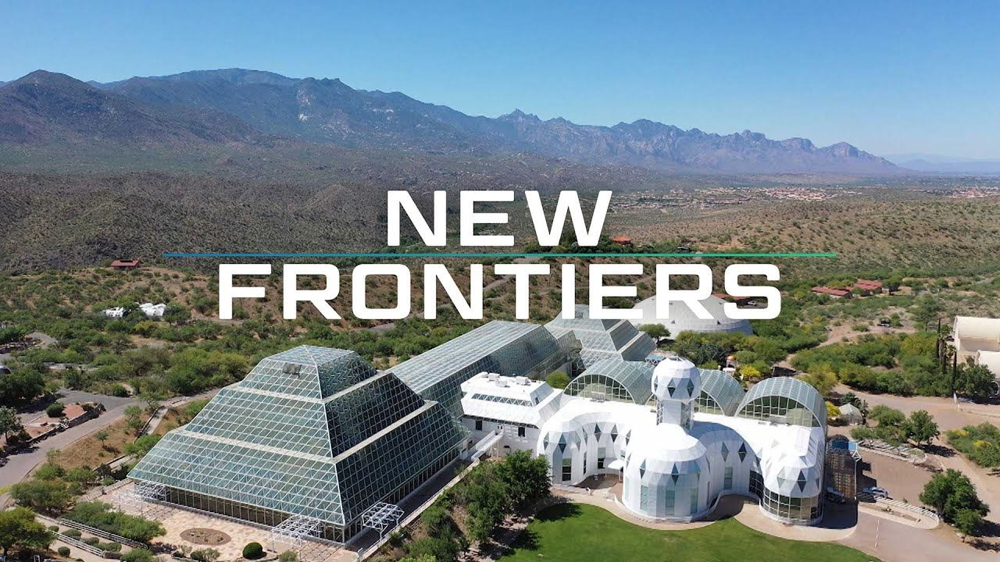
Biosphere 2 Agrivoltaics Walk-through
Field tour of Biosphere 2 plots; explains instrumentation and crop responses under PV shade.
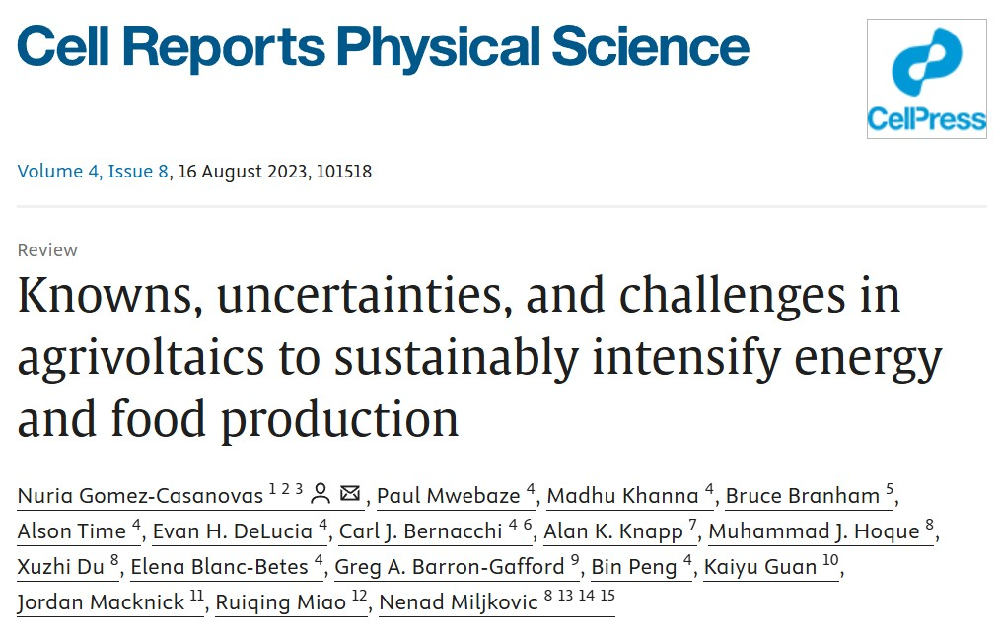
Knowns, uncertainties, and challenges in agrivoltaics to sustainably meet FEW goals
Peer-reviewed meta-analysis highlighting UA/Biosphere-2 micro-climate & labor-safety datasets as highest-quality evidence; lists research gaps.
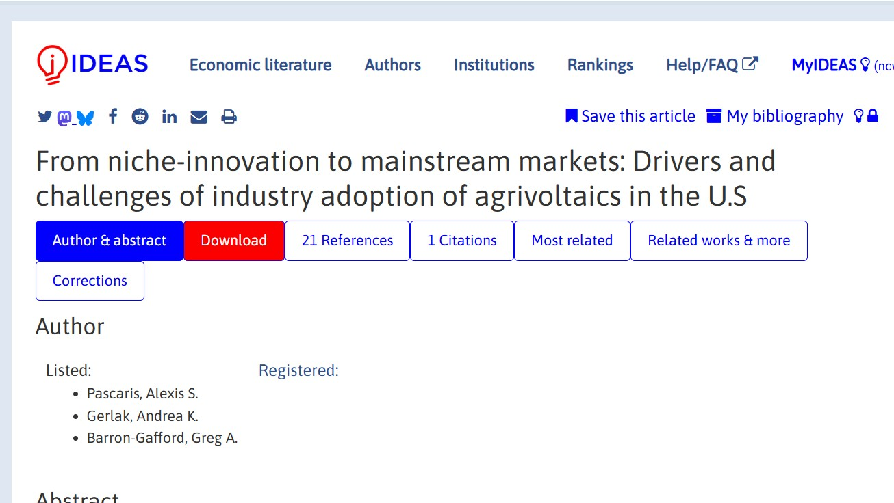
From niche-innovation to mainstream markets: Drivers and challenges of industry adoption of agrivoltaics in the U.S.
Examines socio-political landscape for agrivoltaic development, identifying drivers and challenges of industry adoption and policy for mainstreaming.
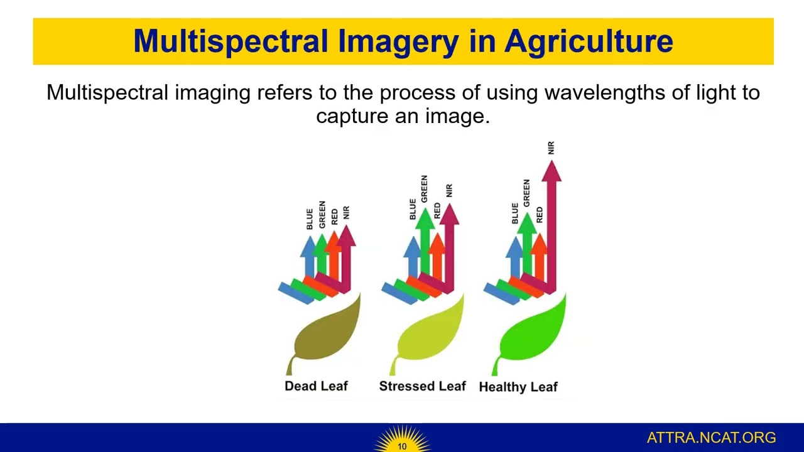
WEBINAR: Made in the Shade – Growing Crops under Solar Panels
45-min webinar where Dr. Barron-Gafford shares yield, water-use & panel-cooling data and best-practice tips.
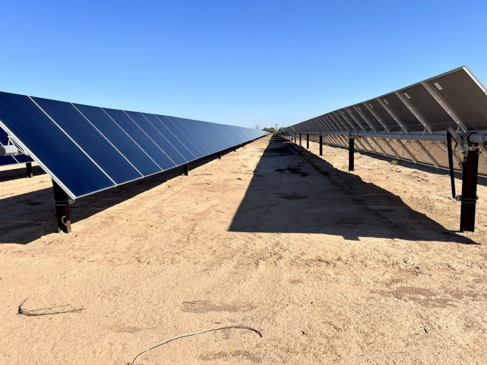
UArizona researchers awarded $1.2 M to explore farming at existing solar sites
DOE FARMS grant funds Barron-Gafford team to retrofit commercial PV farms for crop & grazing trials.
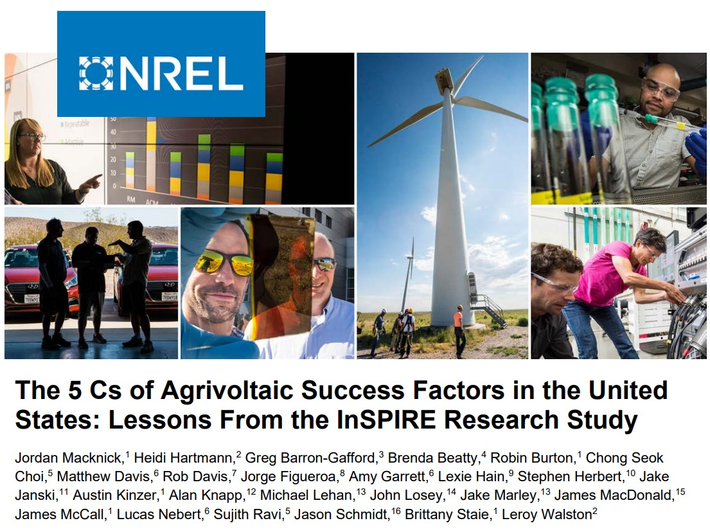
The 5 Cs of Agrivoltaic Success Factors in the United States
Synthesises lessons from 20+ InSPIRE sites into design rubric—Crops, Climates, Configuration, Constraints, Community—for developers & regulators.
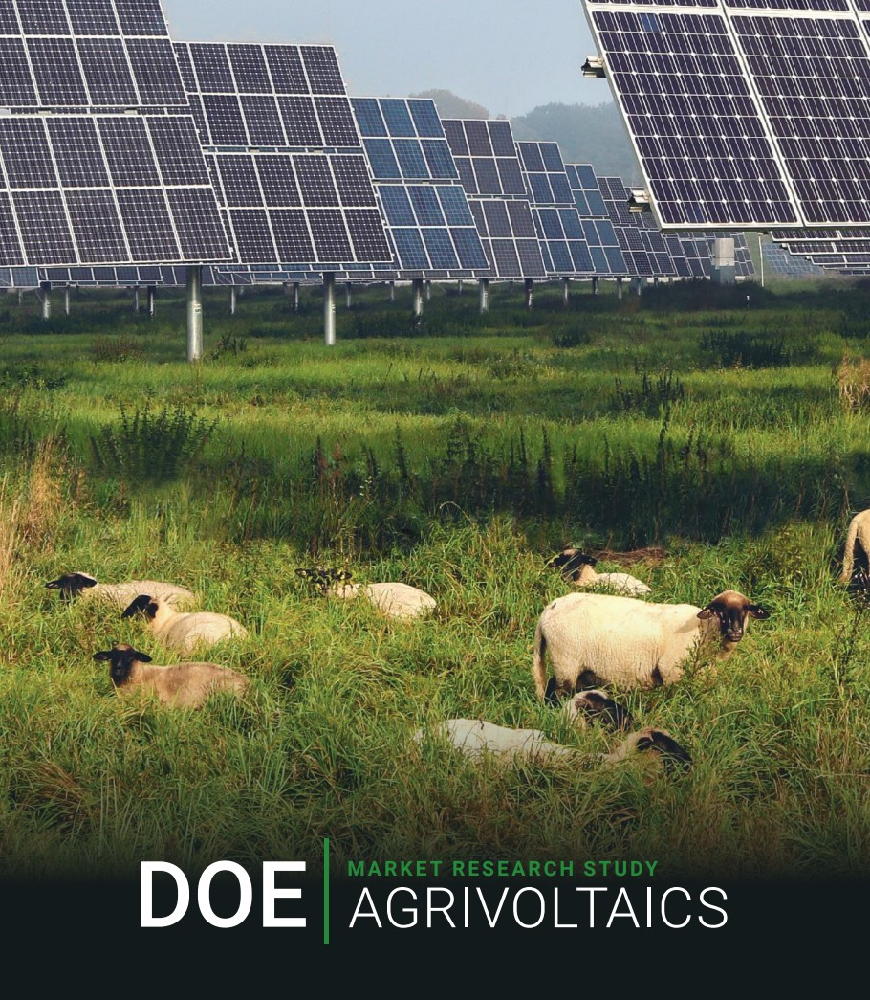
DOE SBIR Market-Research Study: Agrivoltaics
Maps federal SBIR/STTR funding flows and sizes the U.S. market; flags SALSAv as a “flagship semi-arid test-bed.”

Agrivoltaics as a Climate-Smart Conservation Cropping Practice
Features Barron-Gafford discussing benefits of agrivoltaics, including extended growing seasons, reduced water use, and engagement with policymakers.
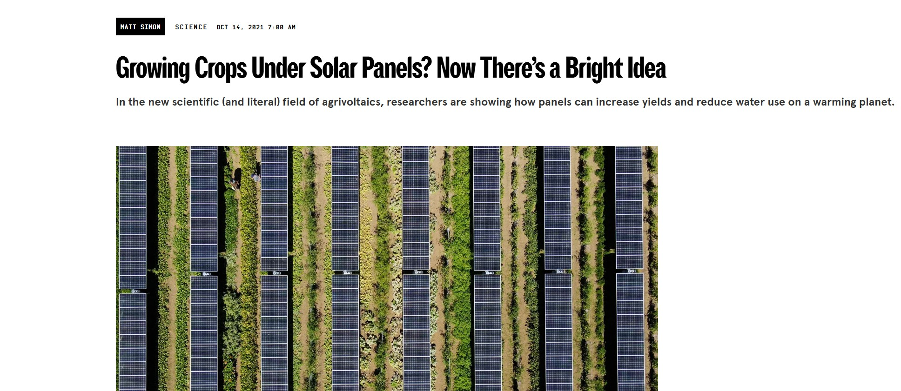
Growing Crops Under Solar Panels? Now There’s a Bright Idea
Popular feature on Barron-Gafford’s “salsa garden” trials—up to 50 % water savings and cooler panels boosting efficiency.
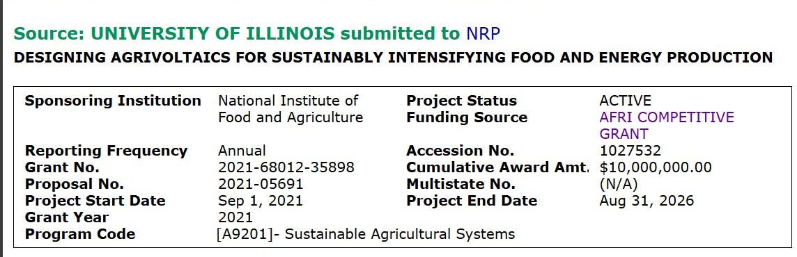
Designing Agrivoltaics for Sustainably Intensifying Food & Energy Production
Multi-institution (UI, CSU, UA) award building coupled PV–crop model validated at three solar farms, incl. SALSAv.
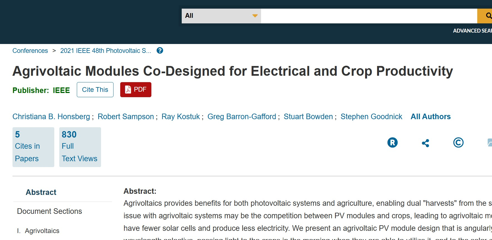
Agrivoltaic Modules Co-Designed for Electrical and Crop Productivity
Investigates shifting sunlight usage by crops through controlled solar PV module coverage, exploring modeling for co-optimization of electrical and crop productivity.
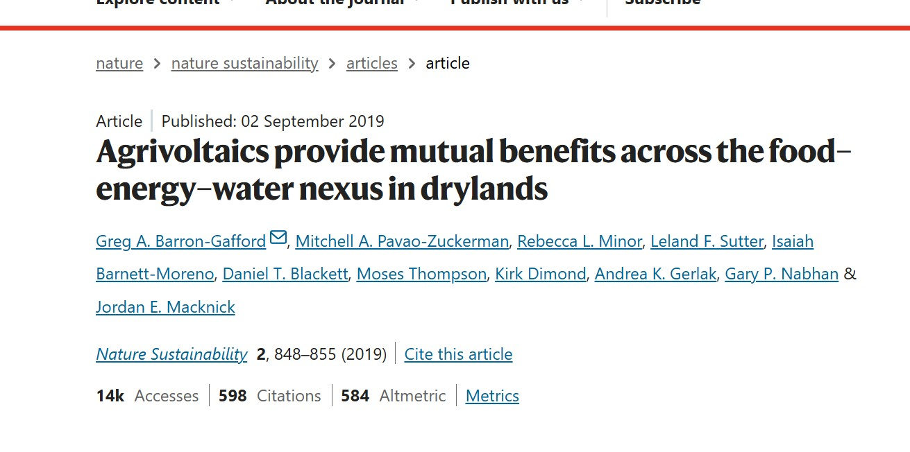
Agrivoltaics provide mutual benefits across the food–energy–water nexus in drylands
Arizona field trial shows PV shade cut plant drought stress, boosted fruit yields and cooled panels, confirming the “win–win-win” food-water-energy model.